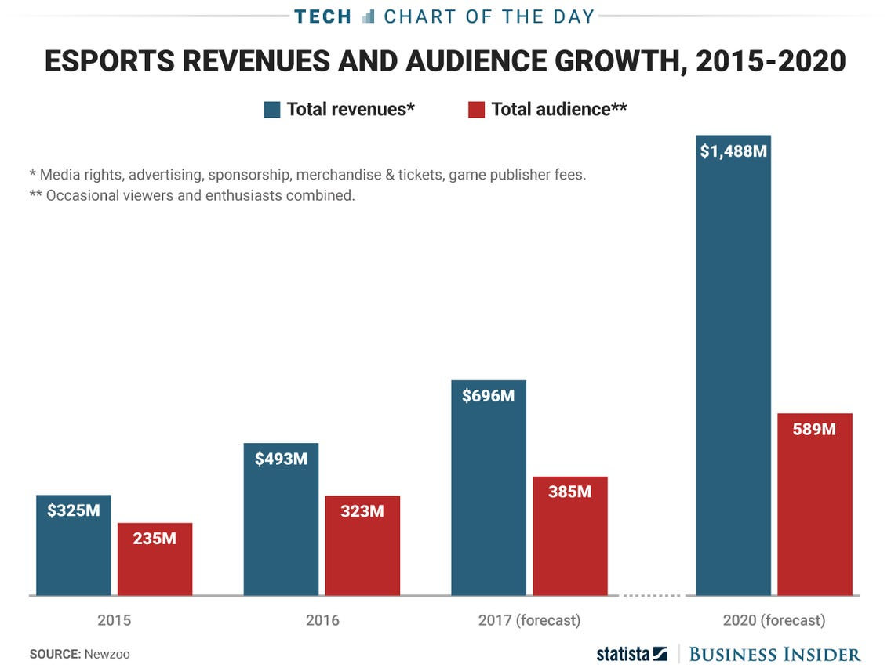

Everyone knows video games. Since it introduction and rise in the eighties, the digital world has token the world by storm, bringing in hundreds of billions of dollars per year in revenue. Recently, a video game related movement has blown up, and only keeps getting bigger. That movement is Esports.
Esports are a form of competition using video games, often with teams of players trying to destroy the other team. In the past 15 years, a lot of games primarily centered around Esports have popped up, such as the tremendously popular League of Legends and CS:GO. With millions of players everyday, the Esports industry is worth billions, with corporate backers much like the NFL or NBA. And like real-life sports, they show no sign of going away any time soon, especially with the pandemic driving more people online and to videogames.
To be able to truly understand the phenomenon that is Esports, we have to go back to the very beginning. Video games have been competitive since the start of it all, Spacewar (a virtual space combat game developed in 1962). Students at Stanford University were invited to an "intergalactic Spacewar olympics" where there was a five man free-for-all Spacewar tournament for a yearly subscription to Rolling Stones. While that relatively small competition was the beginning of it all, no more real progress would be made in Esports until the release of Space Invaders, a popular Japanese arcade game that swept across the world in 1978. Each Space Invaders arcade cabinet would have a list of the people who had the highest amount of points while using the machine, and the general purpose of the game was to get more points than anyone else, further shuffling along the idea of competitive video games. Two years after the launch of Space Invaders, Atari held the Space Invaders championship. The championships was huge for its time, with over 10,000 people participating in the US. Later that year, an arcade owner, Walter Day, decided to go around the United States, recording the high score on all Space Invaders arcade machines he found, and founded a record-keeping company, Twin Galaxies, off of that information. The organization went so far to get the result published in the Guinness Book of World Records, and in 1983 Twin Galaxies started the United States National Video Game Team. From then, Esports continued to grow, with many competitions centered around many games over the next 10 years.
In 1991, the brand-new fighting game Street Fighter 2 came out, and it popularized direct gameplay between two individuals. Previously, many videogames used high scores, instead of direct, real-time gameplay. It also was the start of a wave of combat video games that were played at huge, sports-arena like tournaments for prizes, with games like Super Mario and and the original Counter Strikes following its lead. Later in the nineties, games started benefiting from new-found internet connectivity, with online tournaments happening for games like the Quake series, Doom, and Counter Strike.
With the coming of internet connectivity came the growth of the industry overseas. Many nations hopped on the Esports wave, specifically asian countries like South Korea, who's Esports industry grew exponentially after the growth of PC Cafes, internet cafes found nearly everywhere in the urban capital of Seoul. This new international market helped bring new, growing money to the industry, especially since games like Starcraft were absurdly popular in these newfound international market.
During the 2010's, the Esports industry grew exponentially. New found streaming services like Twitch helped Esports grow mainstream, and made it cool and interesting to people that were not the nerdy type that Esports originally targeted. Youtube channels like Faze Clan popped up, further cementing Esports as not only a part of gaming culture, but as a part of pop culture, too.
The 2020 Coronavirus pandemic brought many people away from their work or school, and towards online gaming. The amount of people who suddenly were at home with time to spare increased drastically, and so did the amount of people playing video games, which in turn brought millions upon millions to Esports. According to Business Insider, the total revenues for the Esports industry doubled to 1.488 billion in 2020, up from 2019's 669 million. The total audience of the industry also grew by over 200 million, to a total of 589 million people.

Esports has came a long way from its humble origins, and just like video games and real-life sports, it will continue to grow as more investors back the industry, and more people watch the tournaments.